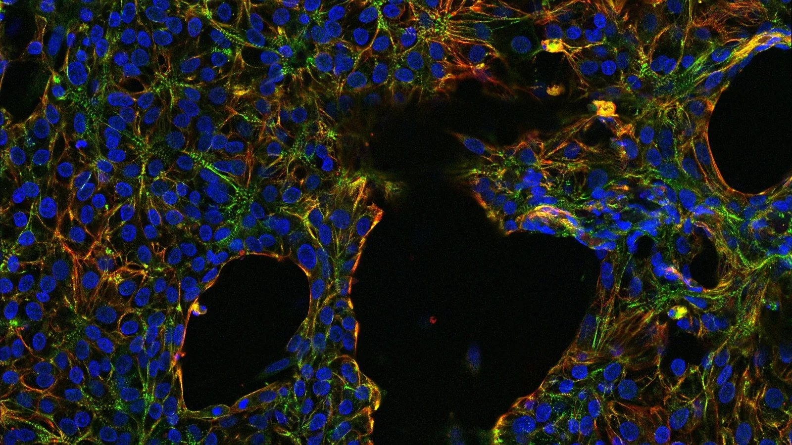
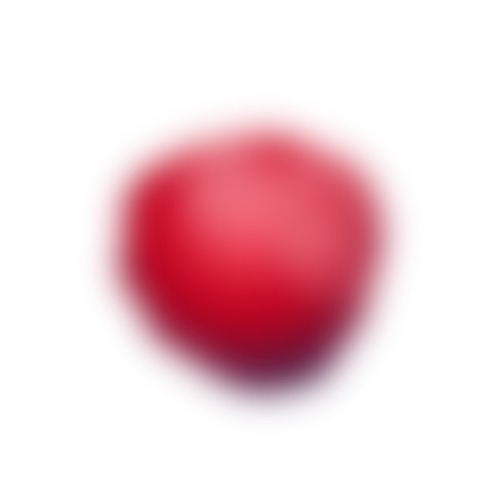
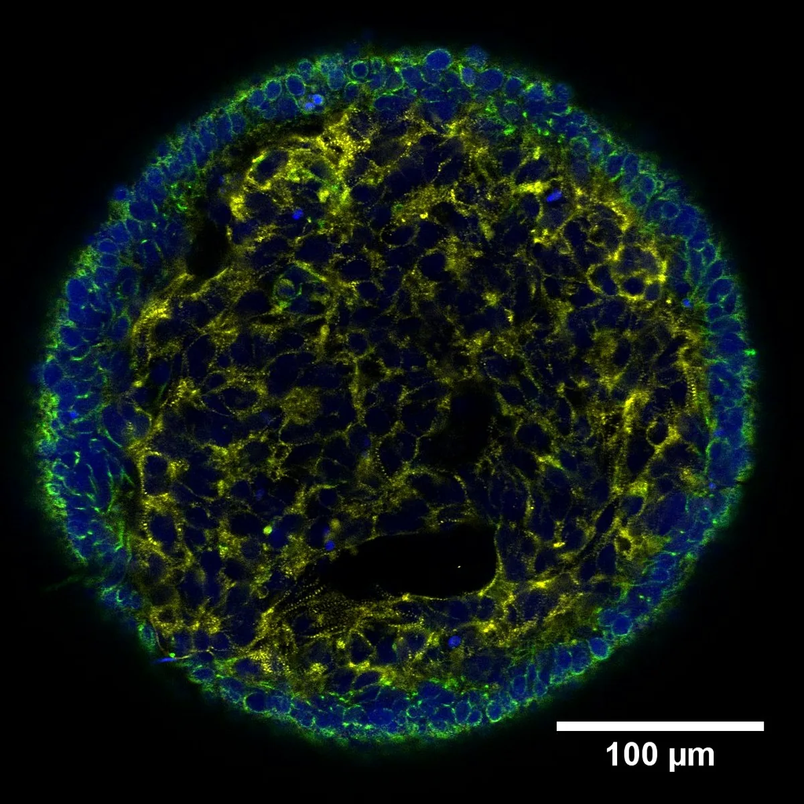
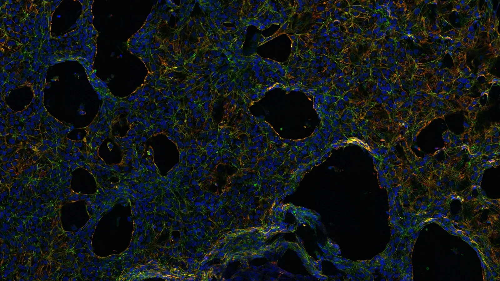

Overview field
Dense cellular architecture with lumen-like voids and multi-marker texture.
Used as a V4-style cinematic ambient layer to give the site more depth and a more research-led visual identity.


ADVANCE IN SCALABILITY

The MWB Lab develops human iPSC-derived cardiac cells and organoids for regenerative medicine and translational cardiac therapy. We build scalable, clinically relevant systems to support safe regenerative therapies, disease modeling, and drug testing.


A decade of work building the cellular, tissue, and translational infrastructure for scalable cardiac regenerative medicine — from iPSC-derived cell production to validated large-animal safety data.
Robust, reproducible production of human cardiomyocytes from pluripotent stem cells at a scale compatible with therapeutic and drug-testing applications.
Differentiation protocols yielding functional endothelial cells for building vascularized cardiac constructs and supporting tissue perfusion.
Three-dimensional cardiac microtissues resolving nuclei, sarcomere, lineage and emerging vasculature in a single scalable specimen.
Translational validation in an acute myocardial infarction porcine model, demonstrating cell and tissue behaviour in a clinically relevant large-animal system.
Safety confirmed thirty days after transplantation, a key prerequisite for moving cardiac cell therapies toward clinical use.
Organoid-based compound testing that captures contractility, conduction and cellular response in a humanized three-dimensional system.
Targeted modification of iPSCs and cardiac lineages to introduce reporters, correct disease alleles, and probe mechanism in isogenic backgrounds.
Tunable hydrogel matrices for 3D cell culture, tissue engineering, and the reconstitution of mechanical microenvironments that favour maturation.
Comparative stem cell work in large domestic species supporting novel regenerative therapies for skin injury and osteoarthritis.
Cardiovascular disease remains a major global health problem. We develop scalable and clinically relevant cardiac cell and tissue systems — the cellular building blocks, the 3D architectures, and the validation data — to support safe regenerative therapies, disease modeling, and drug testing.
The lab's research is organised around four interlocking platforms — from cell manufacturing at the beginning to drug testing and genetic engineering at the end.
Scalable production of iPSC-derived cardiomyocytes and endothelial cells using bioreactor-based expansion protocols compatible with therapeutic and research use.
Self-organising cardiac organoids, engineered microtissues, and hydrogel-based 3D systems that capture structure, contractility, and vasculature in a single specimen.
Large-animal validation in an acute myocardial infarction porcine model, with functional and safety readouts at 30 days post-transplantation — no arrhythmogenic effects.
Organoid-based drug validation combined with targeted genetic engineering of cardiac cells for reporter introduction, disease modelling, and mechanistic study.
A rolling selection of the most recent publications, milestones, and collaborations. The full feed lives on the News page.
A tighter visual system built from real assay photographs: overview fields for ambient depth, organoid overlays for the main viewers, and channel-specific images for scan-like interaction.


